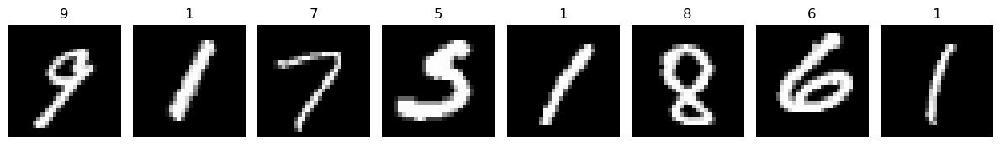
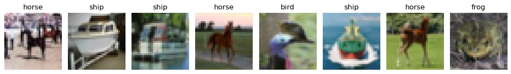

Vision Transformers#
We will begin with implementing a Vision Transformer on the MNIST dataset, then you will do this for CIFAR10 (same as CNN lecture). Being that we didn’t get a chance to implement the attention mechanism or transformers yesterday, we are going to do it now.
I will provide you will the base model code below, in which you will be required to write some code. We will be using Multi-Head Self-Attention with no masking here.
The purpose of this is to not obtain remarkable performance. We want to:
Have you implement MHSA (this is generic - works for text, images, etc)
Understand how transformers can be used for images - treating patches as “tokens”
# Import libraries
import pkbar
import numpy as np
import einops
from einops.layers.torch import Rearrange
import torch
import torch.nn as nn
import torch.nn.functional as F
import torchvision
from torchvision import datasets
from torchvision import transforms
from torch.utils.data import DataLoader, random_split
from torch.utils.data import DataLoader
device = torch.device("cuda" if torch.cuda.is_available() else "cpu")
print(device)
if device.type == 'cuda':
print(torch.cuda.get_device_name(0))
else:
print('cpu')
cuda
NVIDIA A40
transform = transforms.Compose([transforms.ToTensor(),
transforms.Normalize(mean=[0.5],
std=[0.5])])
mnist_classes = ['0', '1', '2', '3', '4',
'5', '6', '7', '8', '9']
full_train_dataset = datasets.MNIST(root="./",
train=True, # the training set of the MNIST dataset is being requested.
transform=transform, # transform=transform applies the transformation defined earlier
download=True) # tells the library to download the dataset if it's not available at the specified root
test_dataset = datasets.MNIST(root='./', train=False, transform=transform, download=True)
# Split train into train/val
train_size = int(0.9 * len(full_train_dataset)) # 45,000
val_size = len(full_train_dataset) - train_size # 5,000
train_dataset, val_dataset = random_split(full_train_dataset, [train_size, val_size]) # Note we use random_split here - a convenient way to do what we did by hand above
# DataLoaders
train_dl = DataLoader(train_dataset, batch_size=64, shuffle=True, num_workers=2, pin_memory=True)
valid_dl = DataLoader(val_dataset, batch_size=64, shuffle=False, num_workers=2, pin_memory=True)
test_dl = DataLoader(test_dataset, batch_size=64, shuffle=False, num_workers=2, pin_memory=True)
print("Training size: ", len(train_dataset))
print("Validation size: ", len(val_dataset))
print("Test size: ", len(test_dataset))
Training size: 54000
Validation size: 6000
Test size: 10000
import matplotlib.pyplot as plt
def imshow(img, mean=[0.5,0.5,0.5], std=[0.5,0.5,0.5]):
"""Unnormalize and show an image tensor."""
img = img.numpy().transpose((1, 2, 0)) # CHW -> HWC
img = std * img + mean # unnormalize
img = np.clip(img, 0, 1)
plt.imshow(img)
def show_samples_mnist(loader, classes, n=8):
"""Display a grid of n images from a DataLoader with their labels."""
images, labels = next(iter(loader))
plt.figure(figsize=(12, 3))
for i in range(n):
plt.subplot(1, n, i+1)
imshow(images[i])
plt.title(classes[labels[i]])
plt.axis('off')
plt.tight_layout()
plt.show()
# Example usage:
show_samples(train_dl, mnist_classes, n=8)

The Vision Transformer Class#
We are going to walk through this step by step and create the individual components. First, we need the Feed Forward Neural Network. This network should contain:
A Linear Layer - input=embed_dim, output = embed_dim * mlp_scale
GELU Activation Funciton
A Linear Layer - input=embed_dim * mlp_scale , output=embed_dim
Dropout
class FF(nn.Module):
def __init__(self,embed_dim, mlp_scale : int = 2, drop_rate: float = 0.0):
super().__init__()
def forward(self,x):
return
Now lets make our Multi-Head Self-Attention Class.
I have provided you with detailed instructions through comments. If you have issues let me know. Make sure you read the comments - this is all about shapes. We do not do explicit concatenation, but rather implicit concatenation through reshaping to perform the Multi-Head parts.
class MHSA(nn.Module):
def __init__(self, embed_dim, num_heads, seq_len=250, dropout=0.2,device='cuda'):
super().__init__()
assert embed_dim % num_heads == 0, "embed_dim is indivisible by num_heads"
self.num_heads = num_heads
self.seq_length = seq_len
self.head_dim = embed_dim // num_heads
self.d_k = self.head_dim ** 0.5
self.device = device
# Create the projections for Q,K,V
self.k_proj =
self.q_proj =
self.v_proj =
self.dropout = nn.Dropout(dropout)
def forward(self, x,attn_mask=None,key_padding_mask=None,need_weights=False):
batch_size, seq_len, embed_dim = x.shape
# Project input x to queries, keys, and values
q =
k =
v =
# We want multi-head attention - typically this is done through reshaping our output
# This is implicit concatenation - equivalent
# We will use the tensor.view() operation
# Hint: We want our Q,K,V matrices to be shaped like (batch,seq_len,num_heads,head_dim)
k =
v =
q =
# Transpose to align axis for computation of attention scores per head
# (batch,seq_len,num_heads,head_dim) -> (batch,num_heads,seq_len,head_dim)
# Hint: We want to use a transpose over dimensions (1,2) for all three
k =
q =
v =
# Compute the attention scores with matrix operations - this is the argument of the softmax QK^T / sqrt(d_k)
# again we need to be careful with the dimensions of K after we transpose
# K is of shape (batch, num_heads, seq_len, head_dim)
# Q is of shape (batch, num_heads, seq_len, head_dim)
# To compute Q @ K^T, we need to transpose the last two dimensions of K so that:
# K.transpose(2, 3) gives shape (batch, num_heads, head_dim, seq_len)
# Resulting attn_scores shape: (batch, num_heads, seq_len, seq_len)
# Each attention head now contains a full pairwise similarity matrix between all tokens
# We also need to divide by self.d_k for normalization constant!
attn_scores =
# This will always be None for our models
# I am strategically leaving it here for you in case you want to use Masked MHSA
if attn_mask is not None:
attn_scores.masked_fill_(attn_mask,-torch.inf)
# This will also always be None for our models
# I am strategically leaving it here for you in case you do something with padded inputs (i.e. [SOS,token1,token2, ..., tokenN,EOS,pad,pad,pad,pad])
if key_padding_mask is not None:
key_padding_mask = key_padding_mask[:, None, None, :]
attn_scores.masked_fill_(key_padding_mask,-torch.inf)
# Compute the softmax over our attention scores. This should be over the last dimension - dim=-1
# Use nn.functional to do this - we imported it as F
attn_scores =
# Apply dropout
attn_scores = self.dropout(attn_scores)
# Now we have our attention weights in the form softmax(QK^T / sqrt(d_k))
# Your next task is to apply these attention weights to the Value matrix V.
# This means performing a batched matrix multiplication between attn_scores and v.
# Hint: This is softmax(QK^T / sqrt(d_k)) @ V
# attn_scores shape: (batch, num_heads, seq_len, seq_len)
# v shape: (batch, num_heads, seq_len, head_dim)
# The result should be of shape: (batch, num_heads, seq_len, head_dim)
# Fill in this line with the correct matrix multiplication
attn_output = attn_scores @ v
# Now you need to rearrange the output so that the num_heads dimension is moved after the seq_len.
# attn_output is currently shaped: (batch, num_heads, seq_len, head_dim)
# You want to transpose it to: (batch, seq_len, num_heads, head_dim)
# This will prepare it to be reshaped into the original embedding dimension.
# Hint: We want to use a transpose over dimensions (1,2)
# Fill in this line with the correct matrix multiplication
attn_output =
# Finally, flatten the last two dimensions (num_heads and head_dim) back into a single embedding dimension.
# The final output should be of shape: (batch, seq_len, embed_dim), where embed_dim = num_heads * head_dim
# I'll give you this one as we need a contiguous call
attn_output = attn_output.contiguous().view(batch_size,seq_len,embed_dim)
if need_weights:
return attn_output,attn_scores
else:
return attn_output,None
Now lets create our Transformer Encoder Block
Again I am going to walk you through this with comments.
class EncoderBlock(nn.Module):
def __init__(self,embed_dim,num_heads, mlp_scale : int = 2,drop_rate: float = 0.2, device='cuda'):
super().__init__()
self.embed_dim = embed_dim
self.num_heads = num_heads
self.device = device
self.mlp_scale = mlp_scale
self.drop_rate = drop_rate
# We need our first layernorm
# Hint: nn.LayerNorm() - this will expect tensors with dim=embed_dim
self.LN1 =
# Each EncoderBlock will need the attention mechanism we created above
# it expects (embed_dim=, num_heads=, seq_len=, dropout=,device=)
# Hint: Look at what we have stored in self. above!
self.attn =
# We are going to use an (optional linear projection after the attention - I will do this for you)
self.c_proj = nn.Linear(self.embed_dim, self.embed_dim, bias=False)
# We need our second layernorm - same as above
self.LN2 =
# We need our feed forward network that we created above
# it expects (embed_dim= , mlp_scale=, drop_rate=)
# Hint: Look at what we have stored in self. above!
self.FF =
# We will not use this function
# This dnymically creates the mask for masked attention
# There are other (perhaps better) ways to do it through a registering a buffer
# Leaving it here for you as well
def generate_mask(self,seq_len):
return torch.triu(torch.ones((seq_len, seq_len), device=self.device, dtype=torch.bool), diagonal=1)
def forward(self, x,padding_mask=None,need_weights=False):
B,N_t,t_dim = x.shape
# We are going to deploy a pre norm strategy
# You need to use your first layernorm self.LN1 here to produce x_norm
x_norm =
# We pass this to our attention block
# the output of our this block should be attn,attn_weights
# Recall that I have left some optional arguments from before, specifcally key_padding_mask and need_weights
# Set both of these to False explicicty
attn,attn_weights =
attn = self.c_proj(attn) # Optional projection layer - done for you
# Now we need to operform the addition and residual connections
# Lets first do the addition
# We want to add our attn output to x
# Hint: x = x + ____
x =
# Now lets do the residual connection - we are going to do this in parts
# First lets calculate the residual part coming from the FF network.
# We also want to apply our post norm (LN2) to the input to this network
# Something like FF(LN2(x))
res =
# Now add the residual part back to x
# Hint: x = x + ___
x =
return x
Now lets create our ViT Class
I am going to fully define this for you just for simplicity.
Things to take note of:
The init() call - what different operations do we need?
The forward() call - try and trace these order of operations. Bring up a picture of a transformer encoder and try to trace the flow!
class ViT(nn.Module):
def __init__(self, image_size, patch_size, embed_dim, num_classes=10,
attn_heads=[2, 4, 2], mlp_scale: int = 2, drop_rates=[0.0, 0.0, 0.0], device='cuda'):
super().__init__()
# Ensure drop_rates and attn_heads lists are consistent
assert len(drop_rates) == len(attn_heads), "drop_rates and attn_heads must be of same length"
# Ensure the image dimensions are divisible by the patch size
assert image_size[1] % patch_size == 0 and image_size[2] % patch_size == 0, \
'image dimensions must be divisible by the patch size'
channels = image_size[0]
# Compute the number of patches by dividing the height and width by patch size
num_patches = (image_size[1] // patch_size) * (image_size[2] // patch_size)
# Each patch is flattened into a vector of size (channels * patch_size^2)
patch_dim = channels * patch_size ** 2
self.device = device
# Patch embedding layer:
# 1. Rearranges the image into a sequence of flattened patches
# 2. Applies LayerNorm to each patch
# 3. Projects to the embedding dimension using a Linear layer
# 4. Applies another LayerNorm
self.patch_embedding = nn.Sequential(
Rearrange("b c (h p1) (w p2) -> b (h w) (p1 p2 c)", p1=patch_size, p2=patch_size),
nn.LayerNorm(patch_dim),
nn.Linear(patch_dim, embed_dim),
nn.LayerNorm(embed_dim),
)
# Positional embedding to retain spatial information (learned parameter)
# Shape: (1, num_patches + 1, embed_dim); +1 for the [CLS] token
self.pos_embedding = nn.Parameter(torch.randn(1, num_patches + 1, embed_dim))
# Create a list of transformer encoder blocks, each with a different number of attention heads
# and optional dropout
layers_ = [
EncoderBlock(embed_dim, attn_heads[i], mlp_scale, drop_rate=drop_rates[i])
for i in range(len(attn_heads))
]
self.layers = nn.ModuleList(layers_)
# Classification head to project the [CLS] token's embedding to logits for each class
self.mlp_head = nn.Linear(embed_dim, num_classes)
# Learnable [CLS] token used for classification
self.cls_token = nn.Parameter(torch.randn(1, 1, embed_dim))
def forward(self, x, padding_mask=None):
batch_size = x.size(0)
# Convert image into a sequence of embedded patches
x = self.patch_embedding(x) # Shape: (B, num_patches, embed_dim)
# Expand the [CLS] token to match the batch size
cls_tokens = self.cls_token.expand(batch_size, -1, -1) # Shape: (B, 1, embed_dim)
# Prepend the [CLS] token to the patch embeddings
x = torch.cat((cls_tokens, x), dim=1) # Shape: (B, num_patches + 1, embed_dim)
# Add positional embeddings
x = x + self.pos_embedding[:, :x.size(1)] # Shape: (B, num_patches + 1, embed_dim)
# Pass through the stack of transformer encoder blocks
for layer in self.layers:
x = layer(x)
# Use the [CLS] token's output for classification
return self.mlp_head(x[:, 0]) # Shape: (B, num_classes)
Training the model#
Lets train our model on the mnist dataset. Take note of the different hyperparameters of the model.
I have left the output of the model below. You should get the same output.
image_size = train_dataset.__getitem__(0)[0].shape
patch_size = 4 # Patch size - grab patch x patch pixels to form an element in the sequence
embed_dim = 64 # embedding dimension - each patch is projected in a space of dim = embed_dim
mlp_scale = 2 # instead of specifying the MLP dimensions explicitly, scale it based off of embed_dim
drop_rates = [0.0,0.0,0.0] # applied for each encoderblock
attn_heads = [2,2,2] # 3 encoder blocks, each with 2 heads -> embed_dim // attn_heads[i] should = 0
num_classes = len(mnist_classes)
model = ViT(image_size,patch_size,embed_dim,num_classes=num_classes,attn_heads=attn_heads,mlp_scale=mlp_scale,drop_rates=drop_rates,device=device)
t_params = sum(p.numel() for p in model.parameters())
print("Network Parameters: ",t_params)
model.to(device)
Network Parameters: 104810
ViT(
(patch_embedding): Sequential(
(0): Rearrange('b c (h p1) (w p2) -> b (h w) (p1 p2 c)', p1=4, p2=4)
(1): LayerNorm((16,), eps=1e-05, elementwise_affine=True)
(2): Linear(in_features=16, out_features=64, bias=True)
(3): LayerNorm((64,), eps=1e-05, elementwise_affine=True)
)
(layers): ModuleList(
(0-2): 3 x EncoderBlock(
(LN1): LayerNorm((64,), eps=1e-05, elementwise_affine=True)
(attn): MHSA(
(k_proj): Linear(in_features=64, out_features=64, bias=False)
(q_proj): Linear(in_features=64, out_features=64, bias=False)
(v_proj): Linear(in_features=64, out_features=64, bias=False)
(dropout): Dropout(p=0.0, inplace=False)
)
(c_proj): Linear(in_features=64, out_features=64, bias=False)
(LN2): LayerNorm((64,), eps=1e-05, elementwise_affine=True)
(FF): FF(
(nn): Sequential(
(0): Linear(in_features=64, out_features=128, bias=True)
(1): GELU(approximate='none')
(2): Linear(in_features=128, out_features=64, bias=True)
(3): Dropout(p=0.0, inplace=False)
)
)
)
)
(mlp_head): Linear(in_features=64, out_features=10, bias=True)
)
def train(model, num_epochs, train_dl, valid_dl,lr=0.001,device='cuda',seed=8):
model.to(device)
torch.manual_seed(seed)
np.random.seed(seed)
torch.cuda.manual_seed(seed)
loss_fn = nn.CrossEntropyLoss()
optimizer = torch.optim.Adam(model.parameters(), lr=lr)
loss_hist_train = [0] * num_epochs
accuracy_hist_train = [0] * num_epochs
loss_hist_valid = [0] * num_epochs
accuracy_hist_valid = [0] * num_epochs
for epoch in range(num_epochs):
model.train()
kbar = pkbar.Kbar(target=len(train_dl), epoch=epoch, num_epochs=num_epochs, width=20, always_stateful=False)
total_correct = 0
total_loss = 0
for i, (x_batch, y_batch) in enumerate(train_dl):
x_batch = x_batch.to(device)
y_batch = y_batch.to(device)
pred = model(x_batch)
loss = loss_fn(pred, y_batch)
loss.backward()
optimizer.step()
optimizer.zero_grad()
batch_correct = (torch.argmax(pred, dim=1) == y_batch).float().sum()
total_correct += batch_correct.item()
total_loss += loss.item() * y_batch.size(0)
kbar.update(i, values=[("loss", loss.item()), ("acc", batch_correct.item() / y_batch.size(0))])
loss_hist_train[epoch] = total_loss / len(train_dl.dataset)
accuracy_hist_train[epoch] = total_correct / len(train_dl.dataset)
model.eval()
val_loss = 0
val_correct = 0
with torch.no_grad():
for x_batch, y_batch in valid_dl:
x_batch = x_batch.to(device)
y_batch = y_batch.to(device)
pred = model(x_batch)
loss = loss_fn(pred, y_batch)
val_loss += loss.item() * y_batch.size(0)
val_correct += (torch.argmax(pred, dim=1) == y_batch).float().sum().item()
loss_hist_valid[epoch] = val_loss / len(valid_dl.dataset)
accuracy_hist_valid[epoch] = val_correct / len(valid_dl.dataset)
kbar.add(1, values=[("val_loss", loss_hist_valid[epoch]), ("val_acc", accuracy_hist_valid[epoch])])
return loss_hist_train, loss_hist_valid, accuracy_hist_train, accuracy_hist_valid
num_epochs = 10
hist = train(model, num_epochs, train_dl, valid_dl)
def plot_loss(hist):
x_arr = np.arange(len(hist[0])) + 1 # number of epochs
fig = plt.figure(figsize=(12, 4))
ax = fig.add_subplot(1, 2, 1)
ax.plot(x_arr, hist[0], '-o', label='Train loss')
ax.plot(x_arr, hist[1], '--<', label='Validation loss')
ax.set_xlabel('Epoch', size=15)
ax.set_ylabel('Loss', size=15)
ax.legend(fontsize=15)
ax = fig.add_subplot(1, 2, 2)
ax.plot(x_arr, hist[2], '-o', label='Train acc.')
ax.plot(x_arr, hist[3], '--<', label='Validation acc.')
ax.legend(fontsize=15)
ax.set_xlabel('Epoch', size=15)
ax.set_ylabel('Accuracy', size=15)
plt.show()
plot_loss(hist)
from sklearn.metrics import confusion_matrix
import seaborn as sns
def evaluate_model(model, dataloader, class_names, device):
model.eval()
all_preds = []
all_labels = []
with torch.no_grad():
for inputs, labels in dataloader:
inputs, labels = inputs.to(device), labels.to(device)
outputs = model(inputs)
preds = outputs.argmax(dim=1)
all_preds.append(preds.cpu())
all_labels.append(labels.cpu())
all_preds = torch.cat(all_preds).numpy()
all_labels = torch.cat(all_labels).numpy()
# Total accuracy
total_acc = (all_preds == all_labels).mean()
print(f"Total accuracy: {total_acc:.2%}")
# Per-class accuracy
per_class_acc = []
for i, cls in enumerate(class_names):
idxs = all_labels == i
cls_acc = (all_preds[idxs] == i).mean() if np.sum(idxs) > 0 else 0
per_class_acc.append(cls_acc)
print(f"Accuracy for class {cls}: {cls_acc:.2%}")
# Confusion matrix
cm = confusion_matrix(all_labels, all_preds)
plt.figure(figsize=(10,8))
sns.heatmap(cm, annot=True, fmt='d', cmap='Blues',
xticklabels=class_names, yticklabels=class_names)
plt.xlabel('Predicted')
plt.ylabel('True')
plt.title('Confusion Matrix')
plt.show()
return total_acc, per_class_acc, cm
total_acc, per_class_acc, cm = evaluate_model(model, test_dl, mnist_classes, device)
def show_predictions(model,test_dataset,classes,device):
model.eval()
fig = plt.figure(figsize=(12, 4))
for i in range(12):
ax = fig.add_subplot(2, 6, i+1)
ax.set_xticks([])
ax.set_yticks([])
idx_ = np.random.randint(low=0,high=len(test_dataset))
img, true_label = test_dataset[idx_] # tensor image and true label (int)
# Predict
pred = model(img.unsqueeze(0).to(device))
y_pred = torch.argmax(pred).item()
img_np = img.permute(1, 2, 0).cpu().numpy()
img_np = img_np * 0.5 + 0.5
img_np = img_np.clip(0, 1)
ax.imshow(img_np)
# Map label indices to text names
true_label_name = classes[true_label]
pred_label_name = classes[y_pred]
ax.text(0.5, -0.2, f'Pred: {pred_label_name}', size=12, color='blue',
horizontalalignment='center', verticalalignment='center', transform=ax.transAxes)
ax.text(0.5, -0.35, f'True: {true_label_name}', size=12, color='red',
horizontalalignment='center', verticalalignment='center', transform=ax.transAxes)
plt.subplots_adjust(hspace=0.5)
plt.show()
show_predictions(model,test_dataset,mnist_classes,device)
Now lets do the same for CIFAR10#
Recall that we now have RGB images - 3 channels. Our model is already setup to support this and transitioning is easy.
Note that training on CIFAR10 is not trivial - depending on how much time you have left you can play with this.
We know that ViT is not ideal when we have small amounts of data - CNN will out perform.
# CIFAR-10 class names
cifar10_classes = ['airplane', 'automobile', 'bird', 'cat', 'deer',
'dog', 'frog', 'horse', 'ship', 'truck']
# Data transform (normalize to [-1, 1])
transform = transforms.Compose([
transforms.ToTensor(),
transforms.Normalize(mean=[0.5, 0.5, 0.5],
std=[0.5, 0.5, 0.5])
])
# Load full CIFAR-10 train/test datasets
full_train_dataset = datasets.CIFAR10(root='./', train=True, transform=transform, download=True)
test_dataset = datasets.CIFAR10(root='./', train=False, transform=transform, download=True)
# Split train into train/val
train_size = int(0.9 * len(full_train_dataset)) # 45,000
val_size = len(full_train_dataset) - train_size # 5,000
train_dataset, val_dataset = random_split(full_train_dataset, [train_size, val_size]) # Note we use random_split here - a convenient way to do what we did by hand above
# DataLoaders
train_dl = DataLoader(train_dataset, batch_size=64, shuffle=True, num_workers=2, pin_memory=True)
valid_dl = DataLoader(val_dataset, batch_size=64, shuffle=False, num_workers=2, pin_memory=True)
test_dl = DataLoader(test_dataset, batch_size=64, shuffle=False, num_workers=2, pin_memory=True)
print("Training size: ", len(train_dataset))
print("Validation size: ", len(val_dataset))
print("Test size: ", len(test_dataset))
Files already downloaded and verified
Files already downloaded and verified
Training size: 45000
Validation size: 5000
Test size: 10000
def imshow(img, mean=[0.5,0.5,0.5], std=[0.5,0.5,0.5]):
"""Unnormalize and show an image tensor."""
img = img.numpy().transpose((1, 2, 0)) # CHW -> HWC
img = std * img + mean # unnormalize
img = np.clip(img, 0, 1)
plt.imshow(img)
def show_samples(loader, classes, n=8):
"""Display a grid of n images from a DataLoader with their labels."""
images, labels = next(iter(loader))
plt.figure(figsize=(12, 3))
for i in range(n):
plt.subplot(1, n, i+1)
imshow(images[i])
plt.title(classes[labels[i]])
plt.axis('off')
plt.tight_layout()
plt.show()
# Example usage:
show_samples(train_dl, cifar10_classes, n=8)

image_size = train_dataset.__getitem__(0)[0].shape
patch_size = 4
embed_dim = 256
mlp_scale = 2
drop_rates = [0.0,0.0,0.0]
attn_heads = [4,8,8]
num_classes = len(cifar10_classes)
model = ViT(image_size,patch_size,embed_dim,num_classes=num_classes,attn_heads=attn_heads,mlp_scale=mlp_scale,drop_rates=drop_rates,device=device)
t_params = sum(p.numel() for p in model.parameters())
print("Network Parameters: ",t_params)
model.to(device)
Network Parameters: 1610858
ViT(
(patch_embedding): Sequential(
(0): Rearrange('b c (h p1) (w p2) -> b (h w) (p1 p2 c)', p1=4, p2=4)
(1): LayerNorm((48,), eps=1e-05, elementwise_affine=True)
(2): Linear(in_features=48, out_features=256, bias=True)
(3): LayerNorm((256,), eps=1e-05, elementwise_affine=True)
)
(layers): ModuleList(
(0-2): 3 x EncoderBlock(
(LN1): LayerNorm((256,), eps=1e-05, elementwise_affine=True)
(attn): MHSA(
(k_proj): Linear(in_features=256, out_features=256, bias=False)
(q_proj): Linear(in_features=256, out_features=256, bias=False)
(v_proj): Linear(in_features=256, out_features=256, bias=False)
(dropout): Dropout(p=0.0, inplace=False)
)
(c_proj): Linear(in_features=256, out_features=256, bias=False)
(LN2): LayerNorm((256,), eps=1e-05, elementwise_affine=True)
(FF): FF(
(nn): Sequential(
(0): Linear(in_features=256, out_features=512, bias=True)
(1): GELU(approximate='none')
(2): Linear(in_features=512, out_features=256, bias=True)
(3): Dropout(p=0.0, inplace=False)
)
)
)
)
(mlp_head): Linear(in_features=256, out_features=10, bias=True)
)
torch.manual_seed(1)
num_epochs = 10
hist = train(model, num_epochs, train_dl, valid_dl,lr=1e-4)
plot_loss(hist)
total_acc, per_class_acc, cm = evaluate_model(model, test_dl, cifar10_classes, device)
show_predictions(model,test_dataset,cifar10_classes,device)
Bonus Question#
Lets say we have our attn_heads list as [2,2,2] to start. If we instead change this to [8,8,8], what happens to our parameter count? Why?